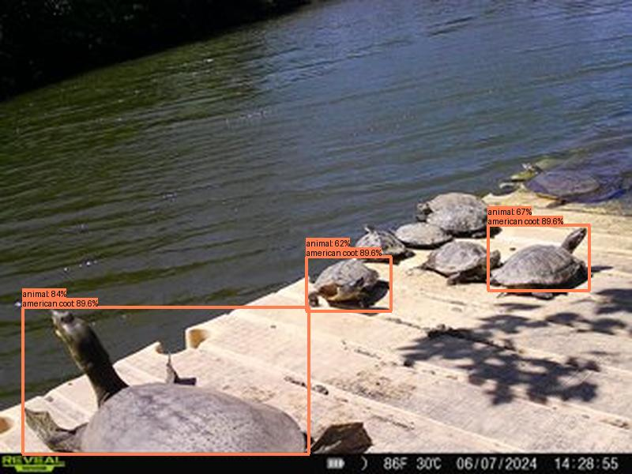
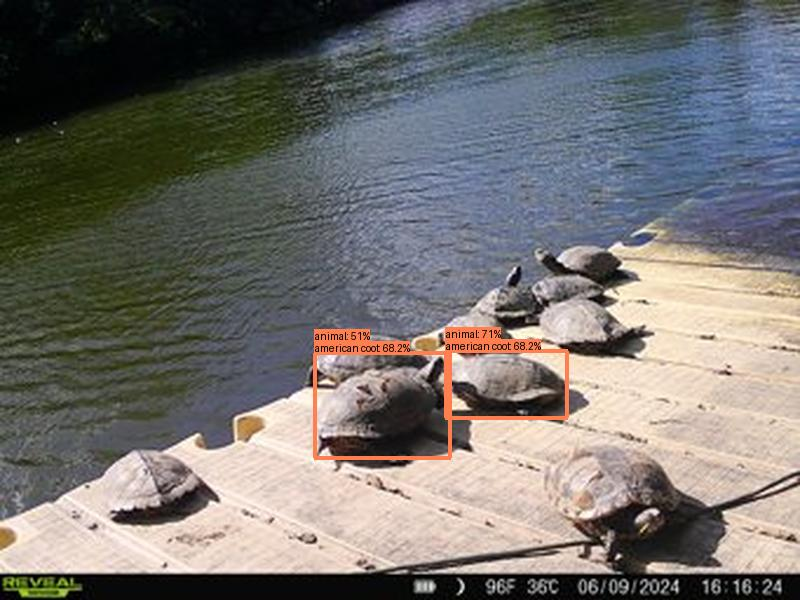
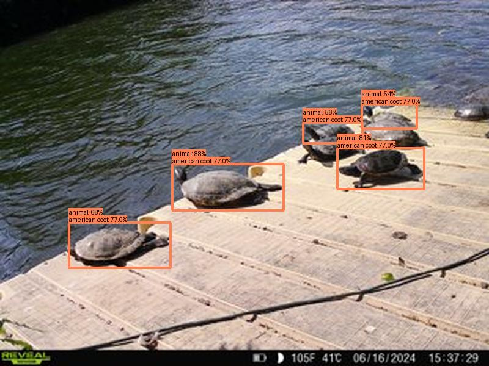
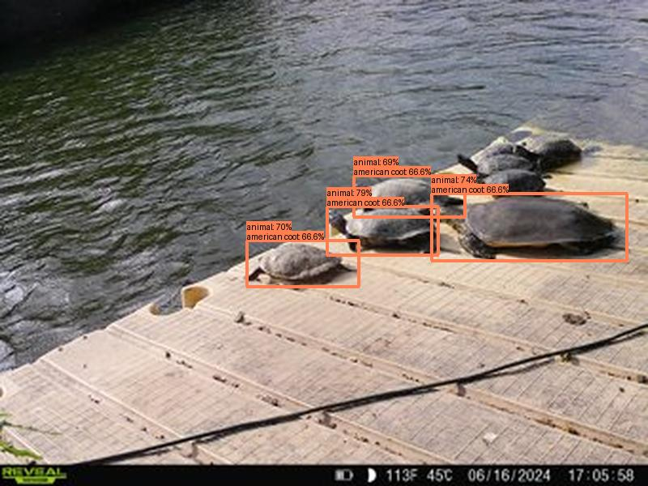
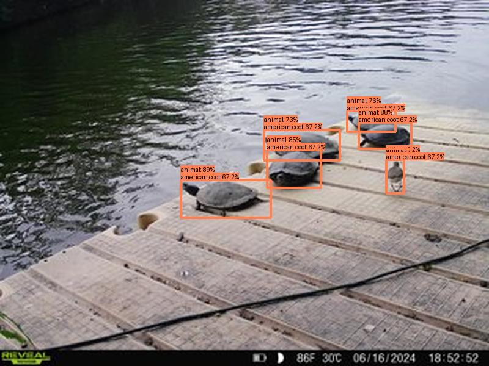

Result type: detections_animal, image: images/batch_0/2024-06-27_UR011--SYFW2803.JPG, max conf: 0.838
Result type: detections_animal, image: images/batch_0/2024-06-27_UR011--SYFW3835.JPG, max conf: 0.713
Result type: detections_animal, image: images/batch_0/2024-06-27_UR011--SYFW6422.JPG, max conf: 0.877
Result type: detections_animal, image: images/batch_1/2024-06-27_UR011--SYFW7898.JPG, max conf: 0.884
Result type: detections_animal, image: images/batch_1/2024-06-27_UR011--SYFW8008.JPG, max conf: 0.788
Result type: detections_animal, image: images/batch_1/2024-06-27_UR011--SYFW8049.JPG, max conf: 0.887
